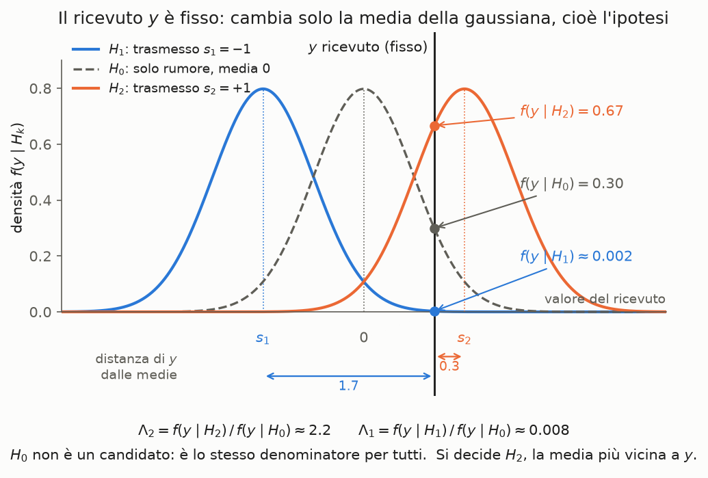

Home · Le mie considerazioni
Le mie considerazioni
Ragionamenti miei, nati durante lo studio, che non sono stati detti a lezione in questa forma. Servono a capire meglio il materiale del corso, ma non vanno confusi con quello che c'è nelle slide: ogni sezione indica la slide da cui parte. Le pagine delle lezioni restano fedeli ai PDF.
Indice delle considerazioni
Verosimiglianza: si sceglie la media della gaussiana, non il ricevuto
Parte dalla formula (8) della Lezione 13 (segnalazione M-aria in AWGN rivisitata): \Lambda_k(y)=\exp\big[\frac{1}{\sigma^2}\big(\text{Re}\langle y,s_k\rangle-\frac12\lVert s_k\rVert^2\big)\big], e dal fatto che massimizzarla equivale a scegliere il candidato s_k più vicino al ricevuto y.
🧩 Considerazione mia: una lettura della regola ML in termini della media della gaussiana.
1. Sotto H_k, y è gaussiano con media s_k
H_k dice y=s_k+n, con s_k noto e fisso e n gaussiano a media nulla con varianza \sigma^2 (per componente reale). Sommare una costante a una gaussiana la sposta senza deformarla:
Ogni ipotesi è quindi una campana centrata in s_k, e le campane hanno tutte la stessa forma perché il rumore è lo stesso: cambia solo dove sono centrate.
2. La verosimiglianza è l'altezza della campana nel punto y
y è fisso: è ciò che si è ricevuto, una volta sola, lo stesso per tutte le ipotesi. f(y\mid H_k) è l'altezza della campana k-esima nel punto y. Il ricevitore ML guarda le M campane, traccia una verticale in y e sceglie quella più alta lì. Non si cerca il y che massimizza la densità: si cerca la media, tra le M possibili, che rende più alta la densità nel punto osservato.
3. Perché vince la media più vicina
Una gaussiana è massima nella sua media e decresce allontanandosi: l'altezza in y dipende solo dalla distanza dal centro, e^{-\lVert y-s_k\rVert^2/(2\sigma^2)}. Poiché le campane hanno la stessa forma, la più alta in y è quella centrata più vicino a y:
Senza vincoli la media migliore sarebbe y stesso; ma le medie ammesse sono solo i punti della costellazione s_1,\dots,s_M, e si prende quello più vicino a y.
Il grafico: y fisso, medie diverse, e il ruolo di H₀

🧩 Caso reale monodimensionale con s_1=-1, s_2=+1, \sigma=0.5 e ricevuto y=0.7 (script output/grafici/genera_grafici_considerazioni.py). La verticale nera è il ricevuto: è una sola, uguale per tutte le ipotesi. Ogni campana è un'ipotesi, cioè una media diversa; i pallini sono le verosimiglianze f(y\mid H_k), le altezze delle campane in y. Vince l'arancione (H_2), la cui media dista 0.3 da y, contro 1.7 della blu. La campana tratteggiata è H_0 («solo rumore», media 0): non è un candidato, è il denominatore del rapporto \Lambda_k=f(y\mid H_k)/f(y\mid H_0), lo stesso numero (0.30) per tutti i k, quindi non cambia quale ipotesi vince: \Lambda_2\approx2.2, \Lambda_1\approx0.008.
Il controllo nello script verifica che questi rapporti coincidono con la formula: nel caso reale \Lambda_k=\exp\big[\frac{1}{\sigma^2}\big(y\,s_k-\frac12 s_k^2\big)\big], per esempio \Lambda_2=e^{(0.7-0.5)/0.25}=e^{0.8}\approx2.2.
Esempio numerico: BPSK, s_k=\pm1, ricevuto y=0.3
- campana centrata in +1: altezza \propto e^{-(0.3-1)^2/(2\sigma^2)}=e^{-0.49/(2\sigma^2)};
- campana centrata in -1: altezza \propto e^{-(0.3+1)^2/(2\sigma^2)}=e^{-1.69/(2\sigma^2)}.
La prima è più alta perché +1 è più vicino a 0.3: si decide +1. Le due campane si incrociano a metà strada, in y=0: è la soglia di decisione.
Attenzione: serve la stessa varianza
La regola «vince la media più vicina» vale perché tutte le ipotesi hanno lo stesso rumore, cioè la stessa larghezza di campana. Se una campana fosse più stretta, potrebbe essere più alta in y anche con il centro più lontano.
Come dirlo all'orale
«Sotto H_k il ricevuto è y=s_k+n con n gaussiano a media nulla, quindi y\mid H_k è gaussiano con media s_k e stessa covarianza per tutte le ipotesi. La verosimiglianza è la densità centrata in s_k valutata nel punto osservato y. Poiché la gaussiana è massima nella media e decresce con la distanza da essa, la densità più alta in y è quella con la media più vicina a y: massimizzare la verosimiglianza equivale a minimizzare \lVert y-s_k\rVert, cioè alla decisione a minima distanza.»